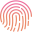

<mat-toolbar color="primary" class="modern-top-bar">
  <!-- Logo on the left -->
  <div class="logo">
    
  </div>

  <!-- Title on the right -->
  <span class="mat-title">DASC</span>
</mat-toolbar>

<!-- Centered tabs using anchor links with routerLink -->
<nav class="modern-tab-nav">
  <a mat-button routerLink="/certification">Certification</a>
  <a mat-button routerLink="/stats">See Stats</a>
</nav>
